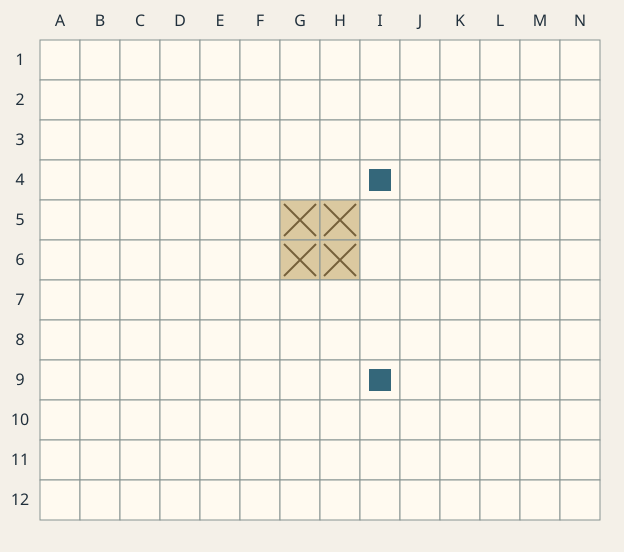

Одинаковые правила, разная история
Все карты совпадают с сеткой нативного пакета: 14 × 12, клетка — 5 футов. G5/H5/G6/H6 — трудная местность; I4/I9 — половинное укрытие. Остальные детали описания декоративны, пока ведущий не изменил поле штатно.
Расстановка и параметры
Герои в порядке списка встречи: B3, B4, B5, B6, C3, C4, C5, C6. Противники: L3, L4, L5, L6, M3, M4. Используйте только нужное число фигур.
Для 3 / 4 / 5 / 6 / 7 / 8 игроков: 2 / 3 / 3 / 4 / 5 / 6 противников, здоровье каждого 12 / 14 / 16 / 18 / 20 / 22. Защита 12; скорость 20 футов; одна ближняя атака +3, 1d4+1 дробящего урона, досягаемость 5 футов.
Перед запуском встречи герои должны находиться в её локации. После сыгранного перехода ведущий перемещает участвующих персонажей обычным действием приложения; герои в других местах автоматически в бой не попадают.
Враги — простая поддерживаемая модель. Мирные решения и ограничения сцены описаны отдельно; ведущий подтверждает их результат. После первого раунда напомните пути переговоров или отступления. Встречи не запускаются автоматически.
Каменные ласты у настила
Только если герои резко тревожат гнёзда под повреждённым настилом и выбирают столкновение после предупреждения.
Цель и выходы
Добраться до лестницы и вывести рабочего. Противников не требуется уничтожать; уход на открытую площадку прекращает преследование.
Руна показывает обход по широкому желобу; можно закрыть гнёзда от пыли тканью и пройти медленно либо подождать, пока птицы отойдут к корму на соседнем уступе.
Поведение противников
Небольшое крылатое существо с тупым каменным клювом, защищающее кладку в щели.
Держатся у гнёзд и обычными ближними атаками оттесняют от края. Не сбрасывают героя автоматически и не преследуют за границей настила.
Размер группы
3 игрока: 2 противника, HP 12; 4: 3 и HP 14; 5: 3 и HP 16; 6: 4 и HP 18; 7: 5 и HP 20; 8: 6 и HP 22. У всех AC 12 и одна рукопашная атака +3, урон 1d4+1. При 3 героях оставьте два свободных подхода; при 6–8 разнесите противников по подходам и дайте каждой паре одну цель. Не повышайте DC и не вводите новые способности.


Сетка 14×12: центральные клетки x6–9,y4–8 заняты осыпью и считаются трудной местностью; ящики дают укрытие на x3,y5 и x11,y8. Западный подход и южная лестница свободны. Падение не отдельная автоматическая атака; DM заранее обозначает край и обычный безопасный обход.
Испуганная охрана тележек
Если герои силой забирают паруса или тележки у работников, не объяснив видимой угрозы; DM предлагает разговор до инициативы.
Цель и выходы
Освободить выбранную полосу для тени или получить полотнище. Охрана защищает имущество, а не тайный заговор; отступление к выходу завершает стычку.
Показать след давления, назвать точное место работы и предложить собственную вещь в залог возврата инструмента; Руна может подтвердить право пользоваться артельным парусом. Никакого магического долга не возникает.
Поведение противников
Работник в плотном переднике с короткой деревянной дубинкой и простым щитом.
Прикрывают тележки обычными атаками, оставляют отход и прекращают бой после явной сдачи или показанного безопасного обмена.
Размер группы
3 игрока: 2 противника, HP 12; 4: 3 и HP 14; 5: 3 и HP 16; 6: 4 и HP 18; 7: 5 и HP 20; 8: 6 и HP 22. У всех AC 12 и одна рукопашная атака +3, урон 1d4+1. При 3 героях оставьте два свободных подхода; при 6–8 разнесите противников по подходам и дайте каждой паре одну цель. Не повышайте DC и не вводите новые способности.

Сетка 14×12: центр x5–9,y4–7 завален щебнем и является трудной местностью; тележки на x3,y4 и x11,y9 дают укрытие. Северный широкий проход ведёт к безопасному выходу; имущество можно обойти с двух сторон.
Клешни на западном сливе
Если герои входят в отмеченную полосу кладок при подготовке слива и после видимого предупреждения выбирают сражение.
Цель и выходы
Открыть доступ к сливу или выйти из полосы кладок. Животных достаточно оттеснить; уничтожение не улучшает чудо.
Тура показывает сухую обходную кромку. Можно подложить широкую доску и пройти над укрытиями либо сместить слив к уже пустому ответвлению, потратив ещё один рабочий эпизод.
Поведение противников
Невысокое прибрежное существо в раковине, защищающее укрытие между плитами.
Остаются рядом с кладками и атакуют в ближнем бою; отступают за мокрые плиты после освобождения прохода. Никаких захватов или приливных таймеров сверх обычных правил.
Размер группы
3 игрока: 2 противника, HP 12; 4: 3 и HP 14; 5: 3 и HP 16; 6: 4 и HP 18; 7: 5 и HP 20; 8: 6 и HP 22. У всех AC 12 и одна рукопашная атака +3, урон 1d4+1. При 3 героях оставьте два свободных подхода; при 6–8 разнесите противников по подходам и дайте каждой паре одну цель. Не повышайте DC и не вводите новые способности.

Сетка 14×12: мокрые водоросли в x5–9,y5–8 — трудная местность; крупные плиты x3,y7 и x11,y4 дают укрытие. Западная сухая кромка и северный берег доступны для отхода. Глубокая вода за южной границей обозначается заранее и не требуется для цели.